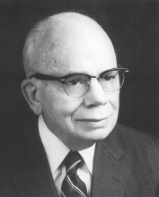

Please note: the AAS Obituaries are temporarily being hosted on this website while their full content is being ingested into the PubPub publishing platform newly adopted by the Bulletin of the American Astronomical Society. When the migration is complete, your existing links will take you to the final, migrated content. Contact peter.williams@aas.org with any questions.
Albert Edward Whitford (1905-2002)
Albert E. Whitford, dean of modern photoelectric photometry, died in Madison, Wisconsin on 28 March 2002, following a brief illness. He was 96 years old, and had remained active in astronomical research well into his 90’s. He will be remembered for his pioneering scientific work, his superb knowledge of astronomical instrumentation, his leadership in bringing the Lick 3.0m telescope into operation, his courage in the face of difficult administrative decisions, his perseverance, and perhaps most of all his profound integrity.
Whitford was born on 22 Oct 1905 in Milton, Wisconsin, the son of Alfred and Mary Whitford. He received his undergraduate education at Milton College, and earned his PhD at the University of Wisconsin, graduating in 1932. In 1937, Whitford married Eleanor Bell Whitelaw, and together they raised three children, William Curtis, Mary Eleanor and Martha Neill. Mrs. Whitford passed away in 1986. Whitford continued to reside in Santa Cruz, carrying on his research activities at UC Santa Cruz, before ultimately retiring in Madison, Wisconsin in 1996, where he could be closer to members of his immediate family.
In the face of loss, we are grateful to have two public records of Whitford’s career, one in his own words: the memoir “A Half Century of Astronomy”, Ann Rev Astron Ap, 24, 1, 1986, and a later summary of his life’s work, reported by Mike Rich and Don Terndrup, who as graduate students had been deeply touched by Whitford’s counsel (“Bulges of Galaxies: A Celebration of the 90th Birthday of Albert Whitford”, by R. M. Rich and D. M. Terndrup, Pub. Astron. Soc. Pac., 109, 571, 1997). Here the importance of Whitford’s research and especially the elements of his personality that I believe made it possible will be emphasized.
As an assistant to the redoubtable Joel Stebbins beginning in 1931, Whitford brought his knowledge of experimental laboratory physics into astronomy. A PhD physics student at the University of Wisconsin, Whitford had had experience measuring tiny electrical currents, similar to those produced by the primitive photoelectric cells that Stebbins used in his work at the small Washburn observatory refractor. Whitford employed vacuum tube technology to greatly amplify the photocell output, and encased the cell itself in a vacuum to reduce the noise produced from cosmic ray ionization. Application of these new techniques led to a great increase in the sensitivity limit. Carrying the new technology west to the 60- and 100-inch telescopes on Mt Wilson, Stebbins and Whitford began a long and fruitful collaboration in which they measured colors and magnitudes of stars in the North Polar Sequence and Selected Areas, as well as globular clusters and galaxies, and investigated the interstellar reddening of O and B type stars. In 1937, they introduced the so-called six-color photometry, extending magnitude measurements essentially from the optical UV cutoff out to 1 micron. In 1948, they pushed out to 2 microns using the newly invented PbS Cashman cell. Using this device they were able to trace the outline of the Galactic nuclear bulge, using the 100-inch telescope.
Of particularly lasting importance, resulting from further trips to Mt Wilson after Stebbins’s retirement, was Whitford’s six-color photometric study of near and distant OB stars, from which he obtained the “Whitford reddening law” (1958). This established the exact amount by which interstellar absorption increased with decreasing wavelength. This result provided the quantitative tools required to determine the effect, often severe, of interstellar dust on the colors and magnitudes of stars, and ultimately had a profound impact on the determination of the cosmic distance scale.
During the period when he agreed to become Director of the Lick Observatory and supervise the completion of the 3.0m Shane telescope and its full complement of instrumentation, Whitford had little time for personal research. But following his de jure retirement in 1973, he embarked on a new kind of research project that in effect was a renaissance for him: the study of the age and metallicity of the stellar population of the Galactic nuclear bulge. In 1978 he showed that the energy distribution of the population in Baade’s window was similar to that of the bulges of spirals and elliptical galaxies. Later, in collaboration with graduate student Mike Rich whom he mentored, and with support from the NSF, Whitford demonstrated that the bulge population was predominantly metal-rich, on the basis of spectra obtained with the Las Campanas 100-inch telescope. Additional collaboration with Jay Frogel, then staff astronomer at CTIO, led to a classical study of the infrared properties of the bulge population, particularly the late M-type giants. These studies in turn inspired graduate student Don Terndrup, mentored again by Whitford (and Sandy Faber), who imaged several bulge fields, and demonstrated, this time from color-magnitude arrays, that the population was indeed old, possibly as old as the globular cluster population, but nevertheless metal-rich.
In recognition of the importance of his research, Whitford received two of the astronomical community’s highest honors: the Henry Norris Russell Lectureship of the American Astronomical Society (1986) and the Catherine Wolfe Bruce Medal of the Astronomical Society of the Pacific (1996). In addition, he was elected to the National Academy of Sciences and the American Academy of Arts and Sciences. He served the astronomical community as Vice-President (1965-67), then President (1967-70) of the American Astronomical Society.
How Whitford succeeded so admirably in making profound contributions to astronomy is all the more remarkable when one considers that he had experienced no formal contact with the subject either during his undergraduate years at Milton College or his pre-PhD years in the Physics Dept of the University of Wisconsin. As he himself noted in the first paragraph of his memoir (op cit): “An adult lifetime devoted to astronomical pursuits did not in my case evolve naturally out of youthful fascination with the stars. Any inclinations that stemmed from boyhood hobbies or early educational influences pointed in other directions”. Yet during those early years of collaboration with Stebbins, Whitford prepared himself to play a leading role in his new profession, particularly after he was appointed assistant professor in the Wisconsin Astronomy Department (1938), which meant that formal teaching of astronomy was required. He goes on to say (op cit): “Since I had never had any classroom instruction in the subject, this had the salutory effect of forcing on me a throrough review of the fundamentals of the subject”. This response characterizes a seminal feature of Whitford’s personality: perseverance. He learned astronomy by private study and teaching, by listening to the important figures of the day during visits to Mt Wilson, especially astronomers such as Walter Baade, and by doing real astronomy at the telescopes during and after his tenure as an NRC Physics Fellow (1933-35). This facet of character may well have sprung from his own family heritage of “Yankee stock” and the cultural traditions of Milton College, an educational institution with which his family had had a long history. But for whatever reason, this habit of perseverance lies, I believe, at the root of his post-retirement scientific renaissance. Always concerned with the colors and magnitudes of Galaxy bulges, Whitford took his interest a step further and learned all he could as background to his own study of the stars in the bulge of our own Galaxy, by reading and listening. Some who come into astronomy from the “outside” continue to practice their technical specialty, but do not “learn” astronomy from a broad perspective. Whitford was not among these: his way was the way of total immersion.
A further aspect of Whitford’s character is found in his willing acceptance of serious responsibilities. Interrupting a budding astronomical career in 1940, he joined the MIT defense project in which microwave radar and its military applications were developed and which culminated in radar capable of detecting German U-boats then threatening shipping in the Atlantic. From 1948 onward, he chaired the UW Dept of Astronomy succeeding Stebbins as Director of the Washburn Observatory. He guided the planning and construction of the Pine Bluff observing station that was dedicated in 1958, shortly before he left to become Director of the Lick Observatory. In his leadership of Lick, he was brilliantly successful in bringing the 3.0m reflector, then the second largest telescope in the world, to completion. Serious problems had developed both in the telescope drive and the figure of the primary mirror. Whitford devoted his own personal talent to the solution of the problems and made the necessary, if contentious, changes in engineering personnel that were required. He further supervised, or supported others, in providing the then state-of-the-art instruments needed if the potential of the telescope was to be realized. In 1966, he supervised the complex move of the Lick scientific staff from Mt Hamilton to UC Santa Cruz, along with the shops and technical and administrative support personnel. Although initially a wrenching experience for a staff that had long identified itself with a mountaintop way of life, most soon recognized that campus life provided new research opportunities not available in a remote site. Whitford promoted a successful effort, with support from the NSF, to bring a cadre of theoretical astrophysicists to join the Lick astronomers in Santa Cruz, thus forming a new and more broadly based graduate program. The preservation and later expansion of the Lick shops provided a venue in which modern engineering personnel could be attracted, who in turn were responsible for advances in digital detector technology and modern complex optical fabrication. In later years, these shops became the nucleus of laboratory support for instrumentation at the Keck telescopes.
In 1962, Whitford served the entire astronomical community by chairing the first survey of astronomy under the auspices of the NAS. This led in 1964 to what became known as “The Whitford Report”, a plan for the public and private support of astronomy during the subsequent decade, and which had as its centerpiece the construction of what later became the 4.0m telescopes at Kitt Peak and Cerro Tololo. The Whitford Report became the model for later decadal planning documents. At the time, the Report was deemed quite “visionary”, but as Whitford later noted, somewhat wryly, “most of the recommendations...were finally implemented, but not in the originally projected 10-year period. In retrospect, these recommendations now seem rather modest.” (op cit.)
I did not know Whitford at all before 1967, when I joined the staff after the move from Mt Hamilton to Santa Cruz. My knowledge of his tenure on Mt Hamilton is therefore limited to what I have learned from others who lived and worked on Mt Hamilton at the time. A summary of those impressions, which seems consistent with my own post-1967 observations, is the following: Albert Whitford was kind, unswervingly loyal to the Observatory, scientifically and technically knowledgeable, scrupulously honest and fair, enormously respectful of scientific accomplishment, strongly supportive of staff who were doing good work. Personally, he was tireless, working in his office late at night, dealing with the necessary drudgery of administering Observatory affairs, honest and forthright, deeply concerned about being fair and democratic. I would add to this that Whitford was a man of reserved personality, quiet and introspective. He was not a “political animal”, and certainly not a “glad-hander” experienced in the nuances of University politics. The controversy that arose within the University of California concerning the governance of the resource represented by the newly-completed 3.0m telescope could not have been a challenge easily welcomed or managed by a man of Whitford’s personality. Nevertheless, he succeeded admirably in fulfilling the wish of the staff to re-establish the academic and technical affairs of Lick on the newly opened UC Santa Cruz campus, where the Observatory was welcomed with great enthusiasm.
Whitford enjoyed hiking in the Sierra even into advanced years. Mike Rich recalled his hardiness when, during one of their observing trips to Chile, Whitford tackled climbing a hill behind the Tololo compound, and went on hikes in the Elqui Valley, all this in his advanced years. Whitford especially liked travel to distant places. In the course of his life, he succeeded in setting foot on every continent. He took special pride in adding Antarctica to the list when in his 80’s he stepped from a dinghy to the Antarctic shore, having boarded a cruise ship at Chile’s Puerto Montt. He was also a fan of the San Francisco Opera. We went together on one occasion and I recall his being bowled over by Gwyneth Jones’s portrayal of Isolde in Wagner’s opera. Could this lie behind one of Whitford’s especially trenchant bon mot’s? When lamenting a bout with a staff member, he was heard to say “I can put up with a prima donna, (long pause ....) IF she can sing!”
I am reminded too that, despite his generally quiet and thoughtful demeanor, Whitford was a very sociable dinner guest whose engaging remarks revealed his deep interest in national and international politics, in addition to astronomy. On other occasions, long and somewhat awkward pauses were a characteristic facet of his conversation. It was as if Whitford were searching for words of exactly the right weight, color and judiciousness before making any further commitment on a given subject. It was entirely in character.
Of the several UCSC students who were mentored or advised by Whitford, and this includes Nick Suntzeff, Mike Rich, Don Terndrup, and Dave Burstein, all have spoken of his willingness to serve as a sounding board for their ideas as they struggled with the task of learning to do research astronomy. One spoke of Whitford’s advice to take refereeing seriously, another his admonition to limit one’s objectives in any given research paper and eschew diffuseness. Yet another recalled his surprise when he first observed Whitford in the course of a colloquium. “Whitford would sit in the back of the room...with his eyes closed and one would think him asleep. Except, when the colloquium ended, he was usually the first with the most penetrating question possible!”
Albert Whitford was not a man given to garrulousness and did not wear his heart on his sleeve. But one could get to know him a bit more intimately with the slow passage of time. We were deeply impressed by his sharply informed knowledge of the research literature and his continued contributions to it almost to his 90th year. His sense of personal loyalty to Lick was deeply intertwined with his own research. Occasionally a visitor or even a staff member might express surprise, in Whitford’s company, that a man in his 80’s would make the daily sojourn to his UCSC office to do research, talk to students and faculty, and listen to the colloquia. To this comment, I recall that Whitford had an especially poignant response: ”But this is my home; this is where my family is.”
Obituary written by: Robert P. Kraft (UCO/Lick Observatory)
BAAS Citation: BAAS, 2002, 34, 1387
SAO/NASA ADS Bibcode: 2002BAAS...34.1387K